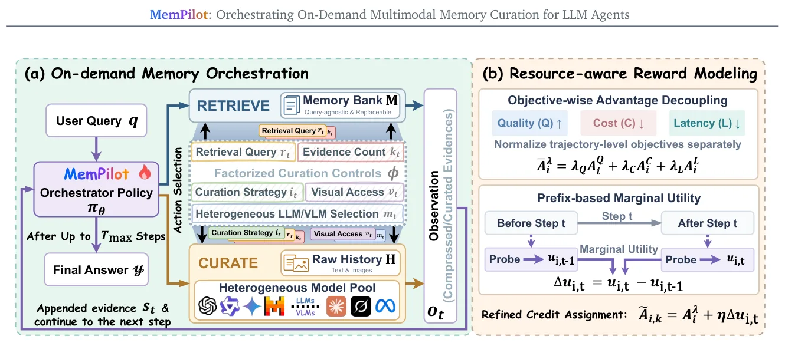
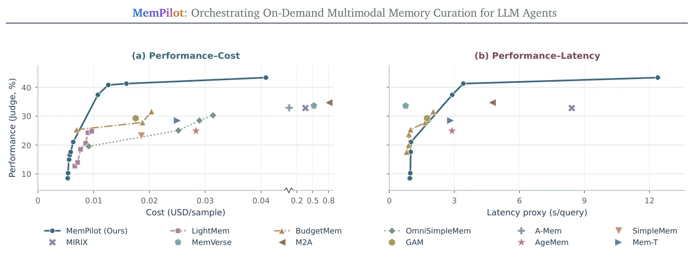
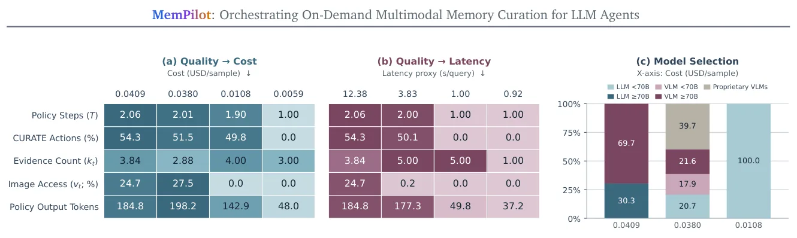
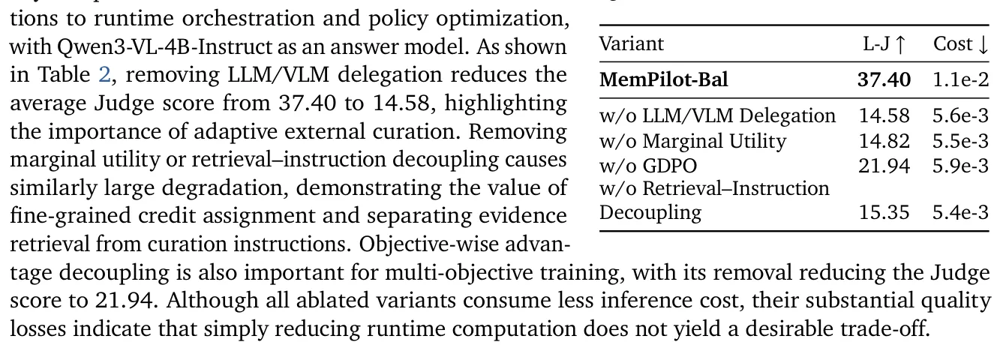

O problema: memória cara demais ou vaga demais
Agentes baseados em modelos de linguagem precisam de memória para interações longas. A abordagem tradicional é processar todo o histórico de interação antes de qualquer consulta chegar — o que chamamos de memória query-agnostic. Isso tem dois problemas: primeiro, você gasta recursos processando informação que talvez nunca seja usada; segundo, você descarta detalhes que podem ser essenciais para uma pergunta específica que ainda não conhece.
Trabalhos recentes começaram a mover o processamento de memória para o momento da consulta (runtime), mas tipicamente fixam operações ou pipelines rígidos. O que falta é controle flexível: adaptar o quanto de computação você aloca conforme a dificuldade da pergunta, o orçamento disponível e a latência aceitável. MemPilot ataca exatamente esse ponto, orquestrando memória sob demanda com trade-offs explícitos entre desempenho, custo monetário e tempo de resposta.
A ideia: duas visões de memória e uma política que escolhe
MemPilot mantém duas representações complementares do histórico de interação. A primeira é um banco de memória query-agnostic (M), construído por qualquer sistema de memória existente — pode ser embeddings semânticos, resumos, o que você já usa. A segunda é o histórico bruto multimodal (H), segmentado em chunks de tokens fixos, preservando texto e imagens originais.
Quando chega uma consulta, um orquestrador — uma política de LLM treinada via aprendizado por reforço — decide iterativamente entre duas ações: Retrieve, que busca no banco comprimido, ou Curate, que delega a curadoria do histórico bruto para modelos heterogêneos (LLMs ou VLMs). A cada passo, a política controla quantas evidências processar, qual estratégia de curadoria usar, qual modelo invocar e se deve acessar informação visual.
Essa formulação expõe graus de liberdade que pipelines fixos não têm. A política pode gastar mais em perguntas difíceis, usar modelos baratos quando possível, e pular imagens se o texto bastar. O resultado é alocação adaptativa de computação em tempo real.

Como funciona: decisão multi-passo e controle fatorado
A cada passo t, o orquestrador observa a consulta e as evidências já acumuladas, depois emite uma ação estruturada: tipo (Retrieve ou Curate) e argumentos. Para Retrieve, os argumentos incluem quantas evidências buscar (k) e a query de busca semântica (r). Para Curate, os argumentos incluem k, r, qual instrução de curadoria usar (i), qual modelo invocar (m) e se acessar conteúdo visual (v).
Essa fatoração é importante. Em vez de escolher entre 'pipeline A' ou 'pipeline B', a política compõe ações granulares. Se a consulta menciona cores, a política pode ativar acesso visual; se o histórico é longo, pode aumentar k; se o orçamento é apertado, pode escolher um LLM menor. Cada decisão influencia custo, latência e qualidade de forma diferente.
O processo continua por até T_max passos ou até a política decidir parar. As evidências acumuladas são então passadas para o LLM final gerar a resposta. A política não gera a resposta, apenas orquestra a memória que alimenta o gerador.
Otimização multi-objetivo: desacoplamento de vantagens
Treinar a política exige balancear três objetivos que competem: qualidade da resposta (Q), custo monetário (C) e latência (L). MemPilot usa aprendizado por reforço com uma técnica chamada objective-wise advantage decoupling. A ideia é estimar a vantagem (advantage) de cada objetivo separadamente, depois agregá-las com pesos λ_Q, λ_C, λ_L que refletem a preferência do usuário.
Isso resolve um problema comum em RL multi-objetivo: objetivos com escalas diferentes (acurácia em [0,1], custo em centavos, latência em segundos) podem dominar o gradiente. Ao normalizar cada vantagem separadamente antes de agregar, MemPilot garante que a política aprenda a negociar entre objetivos de forma controlada.
Além disso, o sistema usa prefix-based marginal utility estimation para atribuir crédito fino a cada passo. A cada passo t, o sistema sonda a utilidade da resposta parcial (usando as evidências acumuladas até aquele momento) e calcula a utilidade marginal Δu_t como a diferença entre antes e depois do passo. Isso permite recompensar passos que realmente melhoraram a resposta, em vez de distribuir crédito uniformemente.
Experimentos: cinco benchmarks multimodais
Os autores avaliaram MemPilot em cinco benchmarks de agentes com memória multimodal, cobrindo tarefas de resposta a perguntas sobre históricos longos com texto e imagens. Os baselines incluem sistemas que processam tudo antecipadamente, métodos que adaptam memória em runtime mas com pipelines fixos, e abordagens que otimizam apenas subconjuntos dos objetivos (custo ou latência, mas não ambos).
MemPilot foi treinado sob diferentes preferências de otimização, variando os pesos λ. Para cada configuração, o sistema produziu um ponto operacional na fronteira de Pareto entre qualidade, custo e latência. A comparação mostra que MemPilot domina os baselines: para qualquer nível de qualidade, MemPilot atinge menor custo e latência, ou para qualquer orçamento, atinge maior qualidade.

Alocação adaptativa de recursos
Uma análise interessante é como MemPilot aloca recursos sob diferentes preferências. Quando otimizado para qualidade, o sistema usa mais evidências, invoca modelos maiores e acessa conteúdo visual com mais frequência. Quando otimizado para custo, reduz o número de evidências, prefere LLMs menores e evita VLMs (que são mais caros). Quando otimizado para latência, o sistema favorece modelos rápidos e pode até reduzir evidências para cortar tempo de processamento.
Essa adaptação não é hard-coded: emerge do treinamento por reforço. A política aprende que VLMs são caros mas úteis quando a consulta envolve informação visual, que modelos grandes valem a pena para perguntas complexas, e que recuperar memória comprimida é rápido mas pode perder detalhes. O resultado é alocação query-specific: perguntas fáceis recebem processamento leve, perguntas difíceis recebem mais recursos.

Ablação: o que realmente importa
Os autores conduziram estudos de ablação removendo componentes do sistema. Remover a capacidade de delegar curadoria a LLMs/VLMs heterogêneos degrada significativamente o desempenho: sem essa flexibilidade, o sistema não consegue adaptar qualidade e custo à dificuldade da consulta. Remover a estimativa de utilidade marginal também prejudica, especialmente em trajetórias longas, onde atribuição de crédito imprecisa leva a políticas subótimas.
Outro achado: o desacoplamento de vantagens objetivo-wise é essencial para trade-offs controlados. Sem ele, a política tende a otimizar apenas o objetivo dominante (geralmente qualidade), ignorando custo e latência. Com desacoplamento, a política aprende a negociar de forma explícita, produzindo fronteiras de Pareto mais amplas.

Limitações e o que fica em aberto
MemPilot assume que você já tem um banco de memória query-agnostic construído — o framework não propõe um novo método de construção de memória, apenas orquestra o uso dela. Se sua memória pré-construída for ruim, MemPilot não vai consertar isso, apenas decidir quando usá-la ou ignorá-la. Isso é uma escolha de design (compatibilidade com sistemas existentes), mas significa que a qualidade final depende de ambos os componentes.
O treinamento por reforço exige um conjunto de consultas e históricos representativos. Se a distribuição de teste for muito diferente da distribuição de treino, a política pode não generalizar bem. Os experimentos cobrem cinco benchmarks, mas todos são tarefas de QA sobre históricos multimodais — não está claro como MemPilot se comporta em outros tipos de interação (diálogo aberto, planejamento, etc).
Outra questão: o sistema otimiza custo monetário e latência como proxies, mas não modela explicitamente trade-offs de privacidade (curar localmente vs. delegar para APIs externas) ou consumo de energia. Esses são objetivos relevantes em cenários reais, mas ficam fora do escopo do paper.
Finalmente, o overhead de executar a política orquestradora em si não é discutido em detalhe. A política é um LLM que roda a cada passo — isso adiciona latência e custo. O paper não reporta quanto desse overhead é absorvido pelos ganhos de eficiência, o que seria útil para avaliar a viabilidade prática em aplicações de baixa latência.
Por que isso importa
MemPilot é relevante porque expõe um espaço de design que a maioria dos sistemas de memória ignora: trade-offs explícitos entre qualidade, custo e latência, controlados em tempo real. Sistemas de produção raramente podem otimizar apenas para acurácia — eles têm orçamentos, SLAs de latência e usuários com expectativas variadas. MemPilot mostra que é possível treinar uma política que negocia esses objetivos de forma adaptativa, sem hard-coding regras para cada cenário.
A abordagem também é modular. Você pode trocar o banco de memória, adicionar novos modelos ao pool heterogêneo, ou ajustar as preferências de otimização sem redesenhar o sistema. Isso é valioso em ambientes onde requisitos mudam — por exemplo, reduzir custo durante picos de tráfego, ou aumentar qualidade para usuários premium.
Do ponto de vista de pesquisa, o paper contribui técnicas de RL multi-objetivo que podem ser úteis além de memória de agentes: objective-wise advantage decoupling e prefix-based marginal utility são métodos gerais para treinar políticas que controlam trade-offs em processos de decisão sequenciais. Isso pode inspirar trabalhos em outras áreas onde você precisa balancear múltiplos objetivos em tempo real.
O que fica
- MemPilot orquestra memória de agentes sob demanda, escolhendo entre recuperar informação pré-processada ou curar histórico multimodal em runtime, com controle fino sobre evidências, modelos e acesso visual.
- O sistema usa RL multi-objetivo com desacoplamento de vantagens e estimativa de utilidade marginal para aprender políticas que negociam qualidade, custo e latência de forma adaptativa.
- Experimentos em cinco benchmarks mostram fronteiras de Pareto superiores aos baselines: maior qualidade para o mesmo custo/latência, ou menor custo/latência para a mesma qualidade.
- Limitações incluem dependência de memória pré-construída, generalização para distribuições de teste diferentes, e falta de análise sobre overhead da própria política orquestradora.
Paper original: MemPilot: Orchestrating On-Demand Multimodal Memory Curation for LLM Agents
Comentários
Nenhum comentário ainda. Seja o primeiro.